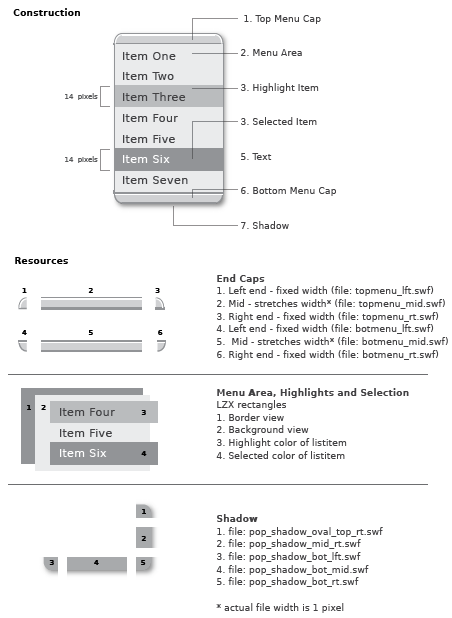

example
LZX Reference
filename: floating list.lzx
The floating list is used in conjunction with other components. Both combobox and menu use this component.
The floating list is defined by six pieces:
1. The end caps (constructed of 3 pieces each)
2. The menu area
3. List highlight
4. List selection 5. Text (icon can be used in place of text) 6. The menu shadow
The menu, highlight and selection areas are shapes defined in LZX code and have no external resources. The border and background colors are attributes which are defined in the floating list class and styles; both can be easily customized. The highlight and selection are created by telling the list item background color to change depending on interaction.
The end caps are rarely used together on one floating list and are each comprised of three swfs: left, middle and right. The end caps are designed to scale horizontally. Scaling the end caps vertically is not advised. Text is 11pt Verity Roman
The highlight and selected rectangles have a default height of 19 pixels and a width determined by the width of the menu. The type is inset and left aligned within the menu.
The menu shadow is a 5 piece view*. The shadow middle resources stretch in both the direction of their orientation, and are constrained to the width and height of the floating list. Shadows were constructed in Macromedia Flash using "Soften edges" and a gradation of 100% black to 0% black.
The top right shadow resource has 3 frames that switch between states depending on the context and position of the menu
The frames are:
"pop_shadow_flush_top_rt.swf" no top cap (combo box, menu)
"pop_shadow_corner_top_rt.swf no top cap (submenus)
"pop_shadow_oval_top_rt.swf" for use with the top cap
*More info on multi-piece views:
